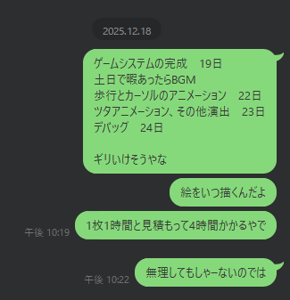

あとあと「これ損してるよなぁ……。サムネにキャラ絵あった方が絶対皆遊んでくれるでしょ。バカか？」と思い、宣伝イラストを使ったサムネに更新してます。
あまりにも突貫工事すぎて面白かったので、後に残すために日記を書くことにした。
日付は記憶半分、タイムスタンプやコミットログ半分で記載している。正確性は保証できないのでご注意ください。
もちろんゲームのネタバレがある。まだ触ってない人はこれを機に触ってから見てね。すぐ終わるから。
当時の臨場感を残したいのと面倒なので、口語交じりのインターネットジャンクテキストである。そういうの苦手な人はなんか適当なAIにでも要約してもらえば良いんじゃないですかね。
それにしても、よくマトモに提出できたなぁ……。
R-TYPE TACTICSリメイクこと、R-TYPE COSMOSのプレミアムBOX特典が公開。楽しみすぎて禿げ上がる。
当然予約した。
マジで最高のゲームなので皆も買おう。
やっぱヘックスマップは良いよなぁ〜。
次の次（玉露の続き物 Vol.13）でシナリオ的にヘックスマップ使えそうだなー。作るかー。
っても、当分先だし、ロジックだけ調べとこう。
と思い、ゲームにおけるヘックスマップの実装について資料を漁り理解を深める。
これが一番よかった。英語だけど。
Hexagonal Grids from Red Blob Games
思えばこれがフラグだった。
あと、今年の紅白、出る予定は全く無かったんですが、magic pot GUI版の宣伝してもいいかなーと思ったので、何もかもが上手く行ったら宣伝ゲーくらいは出すかもしれません。
— lpre (@lpre_ys) December 8, 2025
何か一つでも上手く行かなかったら虚無です。悲しいね。
— lpre (@lpre_ys) December 8, 2025
misskey.ioにて（埋め込み非対応につきコピペ）
最近凝ったコード書いてなくて凝ったコード書きたい欲が高まっているがそんな事をしている場合ではない
2025/12/9 21:14:44
という事でこの時点ではまだ我慢していたらしい。
余談だが、最近はmisskey.ioで楽しくやっている。
https://misskey.io/@lpre_ys
X(Twitter)と違い、いわゆる日常ツイート（ノート）もカジュアルにやっているので、ご興味あればご覧ください。
misskey.ioにて
変に我慢するよりやりたい事やっちまったほうが良いんじゃないの……？（現実逃避に全然どうでも良いコードが書きたい）
2025/12/10 11:19:50
ということで、めでたく（？）この日、プロトタイプのFirst commitが行われる。
プロトタイプはHTML上で動くものとなっている。下記のものもカーソル移動が可能なので、ぜひ触って体感していただきたい。
ソースも読めるぞ！！！
2025年12月10日のプロトタイプ
プロトタイプを作るにあたって、Vue.jsとReactどっちを使う？という悩みが発生したのだが、1ファイルのHTMLで動作させるなら、Vueの方が圧倒的に楽、という結論がでたため、Vueで書くことにする。
この段階で、カーソル移動くらいは普通に出来るようになっていた模様。
なお、自分のゲームプロジェクトには、必ずmemo.mdという、実装におけるメモをまとめたファイルを用意しているのだが
この時点でのmemo.mdの中身はコレである。2行だけ！！！
なんかHEXマップでミニゲーム作りたいなの会
============ふざけてんのか？
遊びなんだからふざけてていいんだよ！！！
初期時点では、XY座標系で各タイルを扱っていた。偶数段だけ半分ずらして描画するタイプのヤツ。
が、この方式だと、ゲームっぽいことをやろうとすると面倒だという事が発覚。
真面目にaxial座標（円筒座標系）で組み直すことを決意。
ここまでのコードはVer1として取っておいて、新しくプロトタイプを作り直すこととした。
適当な場所を「原点」とし、そこから3方向（上下、右上左下、左上右下）の軸をq, r, sと取る。
sはqとrから計算して判定ができるので省略。q, rで1タイルを表す方式。
図とかで見たい人はここの「Axial coordinates」参照。
https://www.redblobgames.com/grids/hexagons/#diagram-grid-axial
さて、組み直す直前、雑座標で組んでいた最後のプロトタイプがこちら。
2025年12月12日のプロトタイプ
なんとかXY座標で出来ないかめっちゃコネコネしていた形跡がある。結局捨てたけど。
axial座標でやることが決まったのと、別にヘックスタイルの描画はツクール側じゃやらない（画像1枚貼って終わり）だしなぁ……
ということで、この辺りでヘックスマップ関連の画像素材を作る。
プロトタイプVer2は画像による描画に切り替える。
なお、ヘックスグリッドだが
という、割とかなり雑な作り方で作成されている。
理由その１？その２は何？
って言うのはこの日記を読めばそのうちわかります。割とすぐに。
さて、ヘックスグリッドは、CSSの都合上、HTMLだけでピクセルONLYの描画をすることができず、下書きにしてクリスタでドットを打つ、とかいう面倒なことをするハメになってしまったのだが。
普段の開発時は、プロトタイプをHTMLベースで作った後、スクショを撮り、切って貼ってUIパーツを作っていたりする。
罫線とかグラデーションとか、なんかいい感じのUIパーツ作るとき、お絵かきツール使うよりCSSで書く方が圧倒的に楽なんだもん！！！！！！！！！
余白や要素のサイズだって、flexboxやらgrid layoutやら使えば自動で良い感じに計算してくれて、さぁ！！！最高かよ！！！！！！！！！！！！！！
と言うことで発生した手抜き手法である。
とまぁ、文字だけで説明されても良く分からんと思うので、玉露の続き物シリーズで使ったUIプロトタイプを、オマケとして展示しておく。
キー操作できるものは少なめ。
当初予定では、コマンドメニューは各キャラの側に出す予定だったみたいですね。めんどくさくなってやめたけど。
バトル画面初版プロトタイプ
クエストセレクト画面
拠点メニュー
モニタールーム（過去イベ置き場）
ステータス画面
さて、「point」と言うフォームが右に出ているものは、UIパーツをクリックすると、それぞれの要素の 中央座標 と要素サイズが出るようになっている。
そう、ここで出た要素サイズで画像を作成し、出た座標でピクチャの描画をすると、良い感じの位置に描画が出来るのだ……！！
なおこの座標表示ツール、mithrilとかいう古のフレームワークを作って作成されており、メンテナンス困難な状況となっている。
いつかVueかReactで作り直さんとなと思っているが時間も機会も無いんよな。まぁ、そのうち……。
今回座標ツールを使っていないのは、シンプルに「無くても出来たから」である。
殆どの座標が計算してからの指定になるのと、物も少なく「CSSみてleftとtopを元に描画して、数ドットズレてるのは目で見て直す」で充分だったのだ。
この辺りで、良い感じの手ごたえを感じたため「このヘックスマップシステム使ってなんかミニゲーム作って、紅白の解説ゲーに載せられないか？」と考え始める。
キャラクターが移動できるシステムで、一番シンプルなゲームと言えば……。
そう、CTF（キャッチザフラッグ）特定座標にCPUより先にたどり着けば勝ち、というヤツである。
単純にランダム配置にするだけではゲーム性は無いが
「各ラウンド最初に、プレイヤーが、自分の望んだ位置に障害物を設置できる。障害物にはZOCがある」
とすれば、多少のゲーム性は出るだろうと判断。
ゲームシステムは決まった。あとはシナリオ的な味付け。
紅白まで時間は無い。なるべく自分が作りやすい方向で行くぞ、という事で、一番扱い慣れたキャラクターを選択。
恋人同士と言う設定のキャラなので「片方（プレイヤー）が書いたラブレターがうっかり飛んで行ってしまった。相手に見られる前に回収しよう」というシナリオが思いつく。
ベッタベタで爆笑しつつも、説明も楽なのでコレで行くことに。
また、この辺りで、プロトタイプのおおよその動作がうまくいくようになる。
ただし、ツクールでは使えないようなJavaScriptの機能（オブジェクトや配列のreverseやらなんやらかんやら）をいっぱい使っていたので、その辺を崩す作業が必要となった。
なんやかんやあってプロトタイプが完成。
この日から、進捗を動画にしてmisskey.ioにUPしていた。
misskey.ioのログを見るに、15日にはほぼ終わっていた。
ということで、この時点のプロトタイプVer2がこちら。
※16日のコミットなのでファイル名が20251216になっているが、たぶん15日には完成している。
2025年12月15日のプロトタイプ
赤青緑のヤツは「赤が開始」「緑がゴール」の経路探索結果である。
カーソルを動かしてEnterキーを押すと、開始・終了位置を自由に変更してテスト出来るようになっている。
ソースを見ると分かるのだが、ツクールに移植することを考慮し、オブジェクトはすべて配列に展開。
各タイル情報も、(r, q)の座標の組み合わせで管理ではなく、タイルごとにIDを振り、そのタイルIDでの管理に変更。
座標とタイルIDの変換を少ない計算量で行えるよう、tileIdMapというマッピング配列を用意したりしてある。
（tileIdMapは多次元配列だが、多次元配列を普通の配列にバラすのは簡単なので気にしていない）
座標での管理だと、キャラクターの所在地を表すのにr, qの2つの変数が必要となるが、IDでの管理であれば1つの変数で事足りるのだ。
忘れていたコミットが行われる。
以後、ヘッダはコミットメッセージとする。
このコミットにて、ふざけた内容で終わっていたmemo.mdにも、無事ルールが記載されている。
この時点で最初のセリフがほぼ完成していたようだ……。
memo.md-20251216-1
※markdownをHTMLに変換したものです。
ここまで来て、ツクールのプロジェクトを立ち上げる。
が、ツクールで新しくゲームをtkるのが久々すぎて、初期設定の諸々のやり方を忘れてテンパる。
更には、謎の不具合が発生し、ツクールがキー入力を受け付けなくなる。さらに焦る。（再起動で直った）
とまぁ、ぐだぐだしつつ2時間くらいかけて、ツクールのプロジェクトおよび、ツクール2k開発用の自分なりの初期設定が終わる。
初期設定も終わったので、ゲームの構造をざっくりと考える。
ツクール2000で自作システムを作るときは、ゲームの状況をステートマシンで考え、ステートマシンごとにイベントのページを分けるのが好き。
なので今回もそのシステムで行くことに。
早速ステートマシンをざっくりと切る。
ステートマシンだったら入場と退場も処理分けるべきだよなー、と思ったので、その辺も意識してこんな感じのものを書く。
1. Init
2. Round Init.
Init: 各種初期値設定＆ラウンド開始演出
Main: カーソル移動＆決定
Exit: バリア設置後、ゲーム開始演出で3へ
3. Start Turn
Init: ターン開始演出？
Main: カーソル移動＆決定
Exit: 4.Actionへ
4. Action
キャラの移動、勝利・敗北判定を行う
勝利した場合5へ
敗北した場合6へ
いずれでもない場合3へ
5. Win
勝利演出
規定ラウンド数クリアしてるなら7へ
そうでないなら2へ
6. Lose
敗北演出
リトライするなら1へ
リトライしないならMAP_STARTへ移動
7. Ex
特殊エンド演出
リトライするなら1へ
リトライしないならMAP_STARTへ移動
8. Clear
クリア演出
リトライするなら1へ
リトライしないならMAP_STARTへ移動意識してるの最初だけやんけ！というのはご愛敬。
MAP_STARTは開始MAPのこと。
当初予定では、ミニゲーム以外のコンテンツもあり、その選択を行うMAPが最初にあったのだ。
また、後々4. Actionは、PCターンとEnemyターンで分離した方がいいな、となって分離してます。
ステートマシンがだいたい決まったので、早速、1: Init（開始時の初期描画やシナリオ演出など）と、2: Round Init（ラウンド開始時の処理）の実装を開始。
この日から、本格的な実装が始まった。
紅白まであと8日だぞ？ふざけてるの？？？
まぁ、遅刻予定で考えていたから……。
この時点でのmemo.mdはこちら。
memo.md-20251216-2
ゲームの内容はほぼこの時点で固まっている。隠しエンド込みで。普通に「バイソンを殺して勝利」って書いてあるなぁ。いやまぁ、実際殺してるんだけど……。
ついでに、ざっと宣伝シーンを作る。
端からマトモに作るつもりがないというか、この時点では「詳しく知りたい人は茶番見てもらって、長々と見る気のない人には秒でわかる何かを叩きつければ充分だろう」と思っており
その結果がQRコードぶん投げである。
自作ツールjs-to-tkcodeの導入である。
GitHub:js-to-tkcode
要はJavaScriptをツクブリのコードに変換するツールである。
四則演算と条件分岐とループ構文はなんかいい感じに展開してくれる。
カッコを使った複雑な四則演算もちゃんとサポートOK！
変数やスイッチはもちろん番号じゃなくて名前で利用できるし、なんなら配列だって使えちゃう。
関数呼び出しも可能。制約はあるが別ファイル記載の関数を使うことも出来る。
例えば、次のJavaScriptが
/** 2025 Winter Sample */
main();
function main() {
tkMock.comment('#1 INIT');
tkMock.raw(`MenuProhibition(0)`);
init();
}
function init() {
if (stmStatus < 1) {
stmStatus = 1;
}
tkMock.changeTone(0, 0, 0, 0, 0, true);
_loadImage();
tkMock.showScreen(tkMock.Const.SCREEN_NO_WAIT);
stmStatus += 1;
tkMock.exitEvent();
}
function _loadImage() {
tkMock.showPicture('hex', tkMock.Const.PIC_NUM_HEX, tkMock.Const.PIC_HIDDEN_X, tkMock.Const.PIC_HIDDEN_Y, 0, true);
tkMock.showPicture('tile', tkMock.Const.PIC_NUM_HIGHLIGHT, tkMock.Const.PIC_HIDDEN_X, tkMock.Const.PIC_HIDDEN_Y, 0, true);
tkMock.showPicture('cover', tkMock.Const.PIC_NUM_COVER, tkMock.Const.PIC_HIDDEN_X, tkMock.Const.PIC_HIDDEN_Y, 0, true);
// レイヤー初期値設定
picLayer[0] = tkMock.Const.PIC_LAYER_PC;
picLayer[1] = tkMock.Const.PIC_LAYER_ENEMY;
picLayer[2] = tkMock.Const.PIC_LAYER_BARRIER;
for (let i = 0; i < 3; i++) {
oldPicLayer[i] = picLayer[i];
}
// 普段使わないピクチャの初期値設定
picShoutX = tkMock.Const.PIC_HIDDEN_X;
picShoutY = tkMock.Const.PIC_HIDDEN_Y;
isSwapLayer = false;
}次のツクブリコードに変換される、という代物である。
Note("#1 INIT")
MenuProhibition(0)
If(01, 111, 0, 1, 4, 0)
Variable(0, 111, 111, 0, 0, 1, 0)
EndIf
ScreenTone(0, 0, 0, 0, 0, 1)
Picture("hex", 1, 0, -1000, -1000, 0, 100, 0, 1, 100, 100, 100, 100, 0, 0)
Picture("tile", 2, 0, -1000, -1000, 0, 100, 0, 1, 100, 100, 100, 100, 0, 0)
Picture("cover", 11, 0, -1000, -1000, 0, 100, 0, 1, 100, 100, 100, 100, 0, 0)
Variable(0, 381, 381, 0, 0, 1, 0)
Variable(0, 382, 382, 0, 0, 2, 0)
Variable(0, 383, 383, 0, 0, 3, 0)
Variable(0, 384, 384, 0, 1, 381, 0)
Variable(0, 385, 385, 0, 1, 382, 0)
Variable(0, 386, 386, 0, 1, 383, 0)
Variable(0, 227, 227, 0, 0, -1000, 0)
Variable(0, 228, 228, 0, 0, -1000, 0)
Switch(0, 13, 13, 1)
ScreenDisplay(19)
Variable(0, 111, 111, 1, 0, 1, 0)
Exitちなみに変数番号・スイッチ番号や定数値は設定ファイルconfig.yamlから読み取って変換する方式。
設定ファイルを書かなきゃいけない面倒さはあるが、自動で設定されても困る個所なので、こうするしかないかなといったところ。
当然だが実際はもっと大量に定義が書いてある。
tmpStart: 2001 # 主に四則演算の展開時に内部的に使う一時領域の開始
tmpEnd: 2100 # 内部的に使う一時領域終わり
varList: # 変数リスト
text1: 1
text2: 2
choiced: 11
randomVar: 12
answerSceneId: 13
answerLoseCount: 14
gameStmId: 100
switchList: # スイッチリスト
isDebug: 1
isBgm: 2
isDraw: 3
isFlip: 4
isSwapLayer: 13
pjConst: # 定数リスト
WIDTH: 320
HEIGHT: 240
PIC_EV: 1
LABEL_START: 1
PIC_HIDDEN_X: -1000
PIC_HIDDEN_Y: -1000
PIC_CENTER_X: 160
PIC_CENTER_Y: 120ドキュメントを書くのが面倒で放置しているため、自分以外の人が使うことは想定していないです。ごめんね。
もちろん使えない構文も多いので、実質「JavaScriptのサブセット」をツクブリのコードに変換するツールである。
とはいえ、JavaScriptとして有効なコードであるため、JavaScript向けの様々なツールの恩恵を受けることができる。
特に重要なのが自動テストが書けることで……
……と書いて気づいたが、今回テストコード全く書いてなかったな！説得力無いじゃん！！！
まあ、HTML上で動作するコードをある程度そのままツクールに持ってこれるので
この手の複雑なシステムを組むときに滅茶苦茶楽なのである。
ツクール上でのデバッグとブラウザ上でのデバッグだったら、圧倒的にブラウザの方が楽でしょ？ステップ実行できるんだよ！？！？
とまあそんなわけで、HTMLでプロトタイプを作っていたのは、後々js-to-tkcodeを使う予定があったからです。
船釣りで終日不在。
当然1行どころか1文字もコードは書いていない。
人生初のフグ釣りで、無事トラフグ2匹釣れました！やったー！！！
そんなことをしている場合ではない。
この辺から、割と真面目にこまめなコミットが発生しているので、コミットベースで記載していく。
ゲーム起動時の描画（ヘックス類、キャラクター、手紙）
の事だと思うのだが、動作確認用のデバッグコードしか差分に無いな？？？
おそらくだいたいは16日時点でできていたのだと思う。たぶん。
この辺は慣れてる人には今更な話だけども……。
ツクール2000のピクチャは都度表示すると大変重たい（らしい）ので、ゲーム呼び出し直後にピクチャの表示を画面外で行っておき、必要な時はピクチャの移動で画面内に移動させる、と言う方式にするとよい。
ので、だいたいそうなっている。
一部ピクチャは初期化時点では呼び出せないものもあるが、そうしたものも、可能な限り「ピクチャの表示」を呼ばないよう実装してある。つもりだ。
fixとは言うものの、この後もじゃんじゃんバリバリRound Initのコードは直しているのだが……。
まあ初期実装が終わったよという事だとおもう。たぶん。
2: RoundInitの処理はだいたい下記
ということでカーソル移動の実装が必要になった。
プロトタイプ上から必要な関数をコピペ。変数名の変更を始めとする、ちゃんとjs-to-tkcodeで変換できる記述への整理を行う。
さて、プロトタイプはVueで作っていた。
Vueにおいて、双方向データバインディング（フォーム入力などなどで値に変更があった場合に、即時に他の表示に反映される、みたいなヤツ）を使う場合、ref()と言う仕組みを使うのだが、このref()を使って作った変数は、JavaScript側では変数名.valueという形で読み書きしなくてはならない。
つまるところ、ツクール側に持ち込むにあたって、せっせせっせと.valueを消す必要がでたのであった。
一括置換でいいっちゃいいんだけど、うっかり忘れて動かないとかあって割と面倒だったので次回以降ちょっと考えんとなと思うなどした。
ついでに、なんか気に食わなくて変数名を変えるみたいなことをしたりしつつ、カーソル移動関連と、それに必要なユーティリティ関数群の移植を終わらせる。
ただのカーソル移動と思いきや「マップ範囲内のみ移動できるように」するため、マップ範囲内かどうかの判定処理や
さらに、「マップ端まで行ったら反対側にループする」処理も必要だったりとで、結構コード量は多い。
ただまぁ、プロトタイプ上ですんなり動作していた部分だったため、コピペしてちょっと変更するだけでｻｸｻｸｯと動いた。動いてしまった。
ここで簡単に動いてしまったため
「もしや、紅白初日公開も可能なのでは……？」とバカなことを思い始める。
また、このタイミングで描画系を別イベントに外だししている。
描画系わざわざ分けなくても良いかなと思ってたんだけど、やっぱ別イベの方が諸々楽だわ、ということで。
（なお当然だが、この時点でアニメーション類は一切実装されておらず、ツタは設置したらその場にピクチャがぽんっと表示されるのみである）
一応説明しておくと。
メイン処理（ステートマシン）では、ピクチャの座標変数と描画状況のフラグの操作だけを行い
実際に「ピクチャの移動」命令を走らせるのは別イベントにしておく。
別イベントでは（今回は枚数が少ないので）必要なピクチャを、それぞれのピクチャに対応した座標変数を使って、移動させるだけの命令を書いておく。
（移動させるだけ、と言っておきながら、今回、アニメーション系の処理も全部描画イベントにぶちこんだため、最終的にはｸｯｿｸｯｿｸｿｺｰﾄﾞになっております。よくないね）
描画が必要かどうかを表すスイッチを1つ用意しておき、各々のイベントの「イベント出現条件」にて
とすると、ゲームの本処理では描画の事をあまり考えなくてもよくなるし、描画は描画で1つのイベントに詰め込んでおくことで、1イベントの修正だけで良くなり大変大変やりやすいのである。
MVCだよMVC。モデルねーけど。
コミットメッセージ、なんとなく日本語使わない方が良い気がして、英数だけで表現しがち。
ということで、PC＝プレイヤーキャラ。プレイヤーキャラの移動の実装である。
ステートマシンも3. Start turnと4. Action(のちにPC Action)に入る。
最終的に、経路情報が配列path[]に、1歩ずつ順番に入っていくと思ってくれ。
なんかめちゃくちゃ計算系が多くて大変そうな気がするが、全部プロトタイプで動作確認まで終わっているため
コピペして変数名等々をﾁｬﾁｬｯと直すだけで無事動いてくれました。カーソル移動と同じ感じ。
移動可能範囲の検索とか、BFS使ってるんだけど、マジで不具合なくｽｽｯと動いて感動したよね……。
というか、axial座標系使っているなら、諸々の座標計算系ってそんな難しくないんだよね。すごいよ。感動したもん。感動だらけ。安い感動だな。
path[]から1個読み出し、PCの所在地を1歩先に進めるpath[]が空になったら（≒全移動が終わったら）次ステートマシンへここで思い出してほしいのが、描画イベントの仕様である。
「描画スイッチがONなら描画イベントが出てステートマシンが消え、描画スイッチがOFFになると描画イベントが消えてステートマシンが出る」
つまり
「移動アニメーションフラグと描画スイッチをON」にして、描画イベントを出現させた後
描画イベントでは「移動アニメーションが完了するまで描画スイッチをONにしたまま処理を続け、移動が完了したら描画スイッチをOFFにする」
と、ステートマシン4番、Actionの処理の頭に戻ってくるのである。
つまり、歩数を意識せず処理が書けるのである。楽！！！
という事で無事プレイヤーキャラ（サイさん）が1マスずつ歩くようになったのだ。
もちろん、現時点でアニメーションは未実装なため、真正面を向いたままｽｩｰｯと移動するのみである。
これはこれでシュールでﾌﾌｯとなる。こういう未熟な描画が見れるのもゲーム実装の楽しい所だと思っています。
夜寝る前、布団でスマホを見つつ、この先のスケジュールを検討する。
「茶番捨てたら、紅白初日に間に合うかな……？？」

検討結果がコレである。バカじゃないの？？？
（寝る前のどうでも良い検討は自分用のLINEに流しがち）
最終的に「BGMは過去作から流用して、絵を土日に描けば何とかなる」と言う結論になった。それはそれでどうかしている。
いずれにせよ、このタイミングで茶番は捨てることが確定した。
何が言いたいんだろうねこのコミットメッセージ。おそらく、ゲームのゲームっぽい部分を実装してるぜ、みたいなイメージだと思われる。
プレイヤーの移動が無事出来るようになったという事は、つまり、敵キャラ、エネミー、すなわちバイソンの移動の実装が始まるということである。
どうでも良いがバイソンのことenemyって呼ぶのめっちゃ面白くて最初数日間ずっとニヤニヤしてたわ。
ここで、「4.ActionでPCとEnemyの移動同時に受け持つのしんどいな。ステートマシン分けるか」という決断をする。
決断したくせにmemo.mdの修正が行われていない。あとでやってすらいない。マジでいまだに修正されてない。ドキュメントをちゃんとしろ！
なにはともあれ、4番のActionをAction Pc。5番にAction Enemyを挿入。以後のステートマシンを1個後ろにずらすという決断をする。
という事でAction Enemyの実装である。
ZOC到達処理について。
この時点では、経路探索時はZOCの考慮を行わず、単純に地図上の最短経路（障害物そのものは考慮する）を採用。
歩行中に「ZOCマスにたどり着いたら、そこで移動を強制終了する」と言う処理にしていた。
だが、何も考えずにZOCに突っ込んで最短ではない経路を通ることが頻発。バイソンがそういう頭悪いことするのは解釈違い……となったため、後々、ZOCを考慮した経路探索をするように変更される。
経路探索時点でZOCの対応が終わっているため、ここでのZOC到達処理は最終的に不要となった。
また、この時点で、ラウンド勝利、敗北、ゲームクリア、の3ステートマシンもざっと作成される。
といっても、演出は何もなく。デバッグメッセージの後、リトライ選択肢が出るのみである。
とはいえこれで、最低限ゲームとして遊べるようになった。
「え……これ、ゲームじゃん……すご……」
等と意味不明な事を口走った記憶がある。ゲーム作ってんだからゲームになるに決まってんだろ！！！
宣伝シーンを別MAPとしていたが、茶番やらないんだったら初期MAPでやりゃーええやん、となったためイベントを削除し、初期MAPの初期化イベントに移動。
（当初予定では、ゲームを起動すると「宣伝」「茶番」「ミニゲーム」の3つから選択して移動する設計だったのだ）
今更だが、この日記をご覧の皆さまは、絶対に本プロジェクトのコミットメッセージを参考にしないように。
ふざけてんのか何のバグかちゃんと書けよ！？！？
「指定タイルが歩行可能マスか？」の判定時に、障害物の判定はあったものの、PC、Enemyの所在地を除外する判定が抜けており
バイソンがサイさんをすり抜けて歩く不具合が発生。大爆笑しながら修正した記憶があるのでたぶんそれ。
あとZOC初期化のタイミングもミスってたっぽい（diff見た）
こいつ何でもかんでも、完了したら「fix」ってつけりゃあ良いと思ってんな？
当然fixなんてしていない。一番最後までチマチマ弄ってたソースまである。
BFS＝幅優先探索のこと。
つまるところ、バイソンの移動経路探索処理のことである。
初期Verおよびプロトタイプでは、1ターンの移動力の事は完全に無視し
「最短歩数でたどり着ける」ルートを取るようにしていた。
一番シンプルな実装ともいえる。
だが、その結果「歩数としては最短だがZOCを経由するためターン数は大幅に遅くなる」頭の悪いルートを取るケースが多発したのだ。
このままではバイソンが阿呆に見えてしまう！！！解釈違いのため何とかすべくアルゴリズムを変更することとなった。
具体的な話は技術系メモの方を見てほしいのだが、「最短歩数」ではなく「最短ターン数」での経路探索へと切り替えた。
簡単に言うと簡単に見えるが、簡単な話ではない。
何故なら「最短ターン数」での経路を出す場合、探索ループ中で「1ターンで到達できるマス」の探索が途中で必要になり、そこにも、BFSを使うから……。
つまり、BFSの中で別のBFSを回す必要が出てくるのだ。わーお。
という事で、このコミットでは、BFSを2重BFSに変更する処理を行っている。
簡単そうに言っているがめちゃくちゃめんどい。
JavaScriptで書いてるだけなんだし、関数呼び出すだけだろって？甘いなぁ、甘い。実に甘い。
まずRPGツクールにスコープなんて概念は無い。すべてがグローバル変数である。
当然、同じ変数を使えばバグる。
よって、内側（到達マス探索BFS）と外側（経路探索BFS）で違う変数を使うように書き換える必要がある。
さらに「whileループを途中で抜ける」のを実現するため、ラベルを利用しているのだが
このラベルの番号が被ってしまうと、意図しない場所にGoToしてしまうので、ラベル番号が被らないようになんやかんやしなきゃいけないという問題もある。
1つのイベントで複数個のBFSを呼ぶ≒ラベル番号の管理で爆発する、と言う話だ。
真面目に書くなら結構大変なのだが、今回は2重程度で終わっているため、BFS関数の引数でラベルIDを操作できるようにして強引に乗り切った。
場当たり的なクソコードだが、時間が無い現状では動くのが最優先である。
ということで、バイソンが少し賢くなった。やったね！！
休日は家族のための日。
という事で作業無し。
今日も家族のための日、では、あるが……。
イラストなら身内と一緒でも描ける。ということで、身内氏に「今日は絵が描きたいので一日中家に居ませんか？」と交渉。無事OKをもらったため、1日で絵を5枚描くことにする。
ぬるっと言っているが割とふざけてんな？
ただ、そもそも今年は忙しいタイミングが多く「省コストで描けるイラストの画風を探ろう」というコンセプトのもと、「ゆるデフォルメ」と自分が呼ぶ画風を練習していた。
ゆるデフォルメシリーズ
これなら1枚1時間ちょっとでやれなくもないな、と言う算段をたてる。
ゆるデフォルメシリーズをやってなければ、画風を決めるだけでも結構な時間がかかっていたと思うので、これはマジでやっておいて良かった。というかフラグだったまである。
この画風以外にもいくつか省コストな作画方法身に着けたいわね。そのうちね。
5枚それぞれ別ファイルにすると、ファイル移動でテンパりそうなので、全て1つのキャンバスで、アニメーション機能を使い差分として扱うことに。
書き出しが1発で終わるというメリットも副次的に享受できた。
という事でタイムラプスは5枚+差分が1ファイルにまとまっている。
作業順とかもわかって面白いかもしれない。
結果的に5枚すべて完成とはならず。線画は終わったものの、塗りは最初の3枚（手紙が飛ぶシーン、手紙を渡すシーン、イチャコラするシーン）までで時間切れ。
残り2枚+差分なら、まあ、なんとかなるだろという判断をして、素直に諦めて寝た。
ばっかじゃねーの、と言っていた、18日夜に決めたスケジュールが案外守れていることに驚愕しつつ。
ゲームとしては最低限完成したので、アニメーションの実装に入る。
この日が一番コミット数が多い。14コミットだそうだ。
細かくコミットしてるだけ、とも言えるが……。頑張ったなぁ。
BFSの探索に乱数要素が無く、バイソンの経路が予測出来てしまう状態だったため、乱数要素を追加。
ついでに、カーソルアニメーションを実装。
「こんなんで行けるんじゃね？？」ってのを雑に実装したら動いてしまったので笑った記憶がある。
マジで簡単だったので、後で続き物シリーズとかにも導入したい。
雑なコミットメッセージが続く……。
BFS周りのリファクタを進めていた模様。
ネストが激しくだいぶ見づらいコードだったのが、だいぶマシになった、かな……？
このタイミングで、回収成功・回収失敗の2エンドのシナリオが書かれている。
（初稿なので一部言い回しが違うよ）
{
[g]あ──っ！！
[g]ダメですっ！ダメ！！
[g]見ないでください──！！！
}
{
[b]……ごめん、読んじまった
[b]これ、いわゆるラブレター、ってヤツ？
[g]あ……は、はいぃ……
}
{
[g]あぁぁ……ぅ、ぅぅ、あぁあぁぁ……
[b]……
[b]ありがと？
[g]うぅ、うぅぅ～～～っ
[b]なんか、その……
[b]……ごめん……
}シナリオはこの形式で書かれており、これをawkのスクリプトでjavascript-to-tkcode用のコードに変換してツクールに持って行っている。
だが、この時点では「なんかシェルかワンライナーで良い感じに変換できるやろ～」くらいにしか考えておらず、変換スクリプト自体は作られていない。詳細は変換スクリプトができたところで語ろう。
なんだよこのコミットメッセージ。
まあなんかテンション高かったんでしょう。
BFSで探索時、探索するマスの優先度を調整。「最短ターン数の経路が複数あるなら、より歩ける方」を優先するようにした。
具体的に言うと、「歩数が2歩のマスから優先的に探索する」というロジック。
こうしたくなった原因だが、なんか速攻でZOC突っ込むのも、最短かもしれないけどなんか頭悪く見えるなぁ、と思ったので。
この結果、バイソンはZOCを極力避けるような動きをすることとなった。これはこれで遠回りすることも有るが、ツタを怖がっているように見えて面白かったので採用。
ちゃんとfixしてんじゃん！そりゃコミットメッセージもテンション上がるわ。
ついでに隠しエンドのシナリオも追加したり、シナリオの微修正を行ったりしている。
!!とかついてる。歩くアニメーションがちゃんと動いて嬉しかったんだろうな。わかる。わかるよその気持ち。
この時点で、アニメーション用に歩行グラをバラして余白付けてくっつけるヤツをやった模様。
詳細は技術系メモ参照。ImageMagickがあれば3行でできるのでとっても便利。
さて、歩行アニメーションには主に2つの実装が必要になる。
本コミットでは両方実装されているが、確か、実装時は足踏みを先に実装してから、向き判定を追加した覚えがある。
さて、だいぶ上の方で言った通り、描画（ピクチャの移動）命令は、基本的なゲームロジックからは分離したイベントとしている。（drawイベント）
こうしておくことで、ゲームロジックからは座標を指定するだけで、あとはdrawイベントが良しなに描画してくれる。
さて、キャラクターの歩行アニメーションについても、今どのコマで描画しているか、なんて、ゲームロジック側では意識したくない。
よって、「キャラクターの基本座標picPcOriginX,picPcOriginY」のみ、ゲームロジック側で指定。
アニメーション関連の計算はdrawイベントの頭の方で行い、キャラクターの向きや歩行アニメに伴う座標加算値をpicPcAnmAddX,picPcAnmAddYで算出。
最終的にoriginの方にanmAddの方を加算した値calcedを使って描画するようにした。
キャラがちゃんと歩くと一気に完成に近づいた感があって楽しい。
PCの歩行アニメーションがうまく行ったなら、後は同じようにEnemy側のアニメーションも実装するのみである。
変数が変わるくらいでやることは全く一緒。スッと実装できた記憶がある。
障害物（ツタ）の描画のウチ、初期描画の調整。
ツタもコマアニメなので、コマアニメ用の余白有結合画像を作成。
生え切ったコマが4コマ目（一番下）になるため、座標の調整が必要になったので調整。
それくらい。
それくらいなんだが、本当はこれくらいの小さな粒度でコミットすべきなんだよ……？？？
ツタのアニメが完成しました。よかったね。
ツタが動くのは、生やした瞬間のみなので、あまり意識することも無くて楽だった記憶。
歩行アニメとフラグ名がダブって変数名変えるの面倒だったくらいかな……。
まあそれも一括置換とかIDEの機能でｽｯって出来るし大した手間じゃないんだけど。
ほんとテンション高いな？まあこの日はゾーン入ってたからね……。
キャラクターが重なったとき、当然、手前に居るキャラクター程上に描画しなくてはいけない。
ツクール2000ではピクチャ番号が大きい程上に表示される。つまり、キャラクターの重なりを判定して、ピクチャ番号を変える必要がある。
簡単に書いてるけどコレめっちゃめっちゃ本当にマジでなんかもうすごくいっぱい考えることあって途方もなく大変だった。
詳細は技術メモの最後の方見てね。
「重なってる時だけ、重なり表現用レイヤーに移動して──」みたいな節約も考えたのだが、今回はMAXで3ユニットなので、愚直にピクチャ番号を2倍（6枚分）確保することとした。
今回コレで良いけど、後日もっとちゃんとしたの作りたくなって、ユニット数が増えてきたらどうするつもりなんだろうね。知らん。
上のコミット（キャラクターの重なり描画関連）めっちゃ大変で、バグもいっぱい出て、デバッグメッセージを大量に埋めてあり、最終的にはコメントアウトして残しておいたのだが、もう要らんやろ、ということでコメントアウトしていたデバッグメッセージを全部消した。
それだけ。
それだけだけど、こういうのちゃんと別コミットにしておくと、後々差分が見やすくなるからそうすべきなんだよ。俺。
なんだこのコミットメッセージ……。
差分を見て思い出した。
ここまでの時点では、カーソルが▼しか表示されておらず、「ツタの選択なのかキャラの移動先選択なのかわかりづらい」と言う問題があった。
また、カーソル自体も、キャラに重なると少し上にズレるようになっていて（それはキャラをちゃんと見せるという意味では良いんだけど）具体的にどのマスの上に居るのか少々わかりづらい状態だった。
そこで、「ツタ選択時は半透明のツタ、移動先選択時は半透明のタイル」を表示するように決定。
その「ツタ選択時は半透明のツタ」を表示させる修正がここの模様。
簡単そうに言っているが、キャラクターの重なり描画の為に、ユニット描画はMAX6か所変更する必要があるため大変面倒であった。ピクチャの透明度も変数で持ちたいよ……。
じゃあ次は「移動先選択時は半透明のタイル」かな、と思いきや、ラウンド表示（左上のヤツ）をやっている。
こういう時はやりたくなったところからやるのが一番早いので、まあ、いいんじゃないですかね。忘れてないし。
ラウンド数の表示自体は、MAX6コマの1枚の画像として作っておく。
ラウンドクリア時に手紙が増える演出は、マップタイル上にゴールとして表示してる手紙を、左上のタイル上に動かすことで対応した。
光る演出は割と雑に数値を入れたのだが、それっぽく見えたので良かった。
ここでもし沼っていたらと考えると恐ろしい。
今回「これでイケるかな？」って仮打ちした内容のほとんどがバッチリHITしていて、「もしあの時HITしなかったら沼って終わってたな、ラッキー！」というタイミングが本当に多い。
運で生きるのをいい加減やめろ。
いうほど手紙の描画じゃなかったコミット。
ラウンドクリア時の手紙等々の描画調整をやっていた。
この辺で、仮組で雑だった場面切り替えが良い感じになってきて、ゲームとしての手触りが上がった記憶がある。
アニメーションではない気がするんだが……。まぁ、手紙が落ちてきた時、手紙が取られた時の演出である。
本当は手紙が落ちてくる場所も、ひらひらと落ちてくるアニメーションを描く予定だったんだが「別になくてよくね？そこに工数かけてる余裕ないよ？？？」となったため、効果音でごまかすことにした。
実際これでよかった。なんならツタも同じ感じでコマアニメ無しで良かったまである。
ついに来たなtweak!!!ちょっとした修正に便利な魔法のコミットメッセージ！！！！
そんなものはない。使うのをやめろ。
バグってマイナスの範囲にカーソルが動く問題があったので修正。
あとなんか描画が壊れるタイミングがあったので、座標の再計算処理を入れる場所を増やしたり。
今思えば、この、カーソルの範囲が壊れるバグ、原因が何となくわかる。
座標計算時に使う配列が、マップ範囲内ギリギリでしかとられておらず、たまに配列の範囲外の変数を参照しているっぽいんだよなー。
で、おそらくその範囲外の変数群が-1で初期化されてるヤツだったっぽい。
もう発生しなくなったから確認できないけど。
今度作るときは、ちゃんと、座標計算でマップ範囲外に行っても良いように、配列の範囲多めに取っておこうね。
12月18日に作ったバカのスケジュール通りに何故か進んでしまっているので、本日はイベント実装がメインである。
ゲーム部分の実装、アニメーション・演出の実装、イベントシーンの実装、と、日を分けていたの、結果的に気持ちの切り替えに繋がって良い結果になったな。
今後もやるかは知らん。
塗りが残ってたはずのイラストが全部塗りあがっている……？？？
多分22日のどっかで時間見つけてガッと全部塗った。たぶん。もうおぼえてないよ。
イラストをゲーム向けに縮小減色したのと、細かいゲーム内テキストの修正。
イラストカットのツクール2000向けの縮小・減色は、続き物シリーズだと、色数を4倍にするためになんか面倒なことをしているんだけど、今回はそんなに色数多い絵も無いので、素直に縮小して256色に減色するのみとなっている。
普通の減色でいいならpngquant使うのが圧倒的に綺麗なので、イラストカットの減色は基本的にpngquant使ってます。
あと、シナリオファイルを元にセンタリングして下側に表示するようなjs-to-tkcode用のコードを吐くシェルがこのタイミングでテストされていた。
ワンライナーでできないかな～って思ってたんだけど、センタリングも考えるとどう考えてもむりぽよだったので、awkメインのシェルを組むことにした。
なんかいっぱいググったり検索したりして作ったんだけど、今見ると何やってるのか全然全くこれっぽっちもわからない。awk苦手なんだよ。たまに使うけど。毎回調べながら書いて毎回何もかもを忘れてしまう……。
頑張ってちょっと読んでみたけど
[g]か[b]かから始まる行で検索して（行頭スペース許可）js-to-tkcode向けのJavaScriptに置換みたいなことをするawkを書いたらしいです。
例えば下記のシナリオスクリプトを
{
[b]何なの？それ
[g]えっ！？え、ええと……
[b]私、見ない方が良いヤツ？
}シェルに通すと下記になり
{
tkMock.message(["", "", "", "\\C[3]\\> 何なの？それ\\<"]);
tkMock.message(["", "", "", "\\C[9]\\> えっ！？え、ええと……\\<"]);
tkMock.message(["", "", "", "\\C[3]\\> 私、見ない方が良いヤツ？\\<"]);
}js-to-tkcodeで最終的に下記のツクブリコードになる。超便利。
Text("")
SubT("")
SubT("")
SubT("\C[3]\> 何なの？それ\<")
Text("")
SubT("")
SubT("")
SubT("\C[9]\> えっ！？え、ええと……\<")
Text("")
SubT("")
SubT("")
SubT("\C[3]\> 私、見ない方が良いヤツ？\<")この演出好きだし、またやるときは流用しよ。
ちょっとawkのコードは見るに堪えない感じなんで表に出すのは許してください。
OP部分は、シナリオだけはすでに入ってる状態だったのだが、言い回しの修正と、イラストカット・SEの追加をここでやっている。
負け＝回収失敗時のイベント実装をやった。
負けからやっているのは、単純に、テストが一番楽（意図的に負けるのは簡単）だったから。
ところでコミットメッセージにピリオドがあったりなかったりするの何なん。
負けイベが実装終わったので、勝ちイベの方。
Loseと実装手順自体は全く同じなので、ぬるっとできた記憶。
Ex＝隠しエンドのこと。
回収失敗エンド時に隠しエンドのヒントを表示させるヤツをここで入れた。
さて隠しエンドの本実装である。
隠しエンドへの到達自体、まだ実装されていなかったので、ここでついにバイソンを直接KILLれるようになった。
隠しエンド自体は最初から条件込みでほぼほぼ仕様は固まっていた。
「絶対に勝てない！！！」ってなって、サイさんがテンパッてやってしまった、というシチュエーションを想定してのことである。
よって、当初予定では「詰み配置だったら」だったのだが……。
「詰み配置」かどうかをチェックするロジック今から考えるのしんどすぎるよ無理無理、となりまして。
そもそも複雑な配置なときに、詰みかどうかを「サイさんが自分で考えて瞬時に判断」するのはキャラクター的にも無理かな、と思いまして。
「誰が見ても一目で詰みと分かる」状態≒「バイソンの隣かつ、サイさんが1ターンで到達できない場所に手紙が落ちた」時を隠しエンドの条件にしました。
ただまぁ、初見でいきなり、あからさまな詰み配置が出るのもなんだなぁと思ったので、１～２ラウンドでは詰み配置になった場合に再抽選をするように。
ヒントはあくまでもヒントじゃないとダメなので、ギリギリ嘘じゃないくらいの言い方にしました。
……が、やっぱり不親切かなぁと思ったので、提出後の更新で、隠しエンドの攻略情報をゲーム内に追加しています。
キャラの移動先選択時、カーソルが指すタイルも光らせようとしてたのすっかり忘れててェ……。
このタイミングで入れたみたいです。
隠しエンドの最初のセリフに臨場感（？）を持たせるべく。ツタ設置時に「えいっ！」と掛け声が表示されるように。
隠しエンドの布石ではあるんですが、普通に手触りとしても可愛くなって良かったなと思います。
日本語でコミットメッセージ書けるなら書けよ！？！？！？
書けるんだよなぁ、普通に……。
詰み配置が出ないラウンド数の調整と、隠しエンドの演出を少し調整しました。
バイソンが倒れる音はここで追加された……。
続き物シリーズでプレイヤーキャラが死んだときの音をわざわざ選んでます。そのために続き物シリーズのソース見に行きました。えへへ。ちなみに「打撃6」です。
メリークリスマスイーッブ！！！
通院だったりケーキを買いに行く予定があったりで、割とゲーム実装以外にも忙しかった覚えがあります。
さて、初日（クリスマス）に公開してもらうには、前日である今日中に提出しなくてはならない。
しかしながら阿呆なので「クリスマスに提出すればOK！」と勘違いしており、提出は25日に行われ、無事遅刻することとなった。
何がアレって、このオチだいぶ前にも1回やってるんだよね……。
次からは締め切りをしっかり確認しよう！！！
サムネ、スクショ、readme.txtの整備をここでやった。
readme.txtの改行コードについては本当にすまんかった……！！
掲示板やSNSでも言い訳した気がするけど！ちゃんとWindowsのメモ帳で開けるか確認はしてたんだよ！！！
Windows11のメモ帳がLFだけの改行コードにも対応してて気づかなかったってオチでした。すごいぜWin11。今更すぎんだわ。
公開当初のサムネは余りにも雑雑雑でした。こんなん。
あとあと「これ損してるよなぁ……。サムネにキャラ絵あった方が絶対皆遊んでくれるでしょ。バカか？」と思い、宣伝イラストを使ったサムネに更新してます。
このタイミングでカーソル移動にバグが見つかる。
左右移動したとき、奇数なら斜め上、偶数なら斜め下、みたいな処理を入れていたのだが（奇数偶数逆かも。忘れた）
画面下端では反転するような処理を入れていた。
その結果、キャラの移動先選択時に、特定配置で、動かせるはずの場所にカーソルが動かせない不具合が出てしまった。
タイミング的にゲロヤバだったため「左右移動時、移動できないと思ったら、他のマスも見る」と言うクソみたいな場当たり的なコードで逃げた。
例えば右を押したとき、「右上に移動しようと思ったが右上は移動不可タイルだった」場合「右下も移動できないかチェック。移動できそうなら右下にカーソルを移す」という処理となっている。
今ならこんなことしなくても根本解決できる気がするなー。
でもなー。こういう安全弁なコードって大事だしなぁー……。
回収失敗イベントのシナリオを微修正。
主にreadme.txtの加筆修正整え作業。
この日、無事、提出されたのであった。
前述のとおり締め切りを勘違いしていたため、残念ながら遅刻提出となってしまったが、自分の思ったスケジュールでちゃんと提出できたから、まぁヨシなんじゃないですかね。
細かいテキストの言い回し調整が大量に行われている。
最後の最後にいっぱいテストPIAIしてて、気になった所をチマチマ直していた記憶。
あと、このタイミングで、readme.txtの文字コードがUTF-8だという事に気づいて慌てて修正してる。
なんだかんだ、ゲーム仕様は最初から最後まで（隠しエンド含めて）ほとんど変わっていない。仕様がミニマムかつ、二転三転しなかったのが一番の勝利要素と思われる。
あとは、悩んだら自分が得意なやり方を選んだのも良かった。イベント演出をイラスト+セリフにしたのもその一環。全部歩行グラ動かすよくあるヤツにしてたら絶対間に合ってない。
あと、いわゆる「残業」は一切しなかった。睡眠時間は全く削っていない。これはマジで偉業だと思う。軽率に偉業って言うよねmisskeyの民。:igyo:
反省点としては、コミットメッセージ──、と言うのは冗談として。
（仕事ではちゃんと書いてるよ！安心して！！！）
まず応募要項をちゃんと読むこと。正確な締め切りを指さし確認すべきだった。
あと、最初から予定して設計してから書いたコードは綺麗だが、後々必要になって追加した要素についてはかなり汚いクソコードになっている。
具体的に言うと、キャラピクチャの重なり順関連。本当に酷いコード……。
今度似たようなことをするのであれば、設計からやり直したい。
こういうハチャメチャな進行、仕事でやるのはもう二度と嫌だ！絶対に嫌でござる！！！ではあるんだけど、趣味でやる分には楽しくていいよね……。
睡眠時間削ってないとはいえ、だいぶ目・肩・腰は終わってしまった。身体に悪いのでほどほどにしておこう。
それにしても、本当によく予定通り提出できたな？？？